Spoilers
The answers, for when you want them
Half the fun here is not knowing. Several of these quests have no NPC pointing at them and no log entry, and working one out with friends is the point. So nothing below is open until you say so.
Found and worked out by Leo, of guild [SENAI]
This page spoils things
Routes, passwords, item counts and endings. Once you open it, you cannot unread it.
Lighthalzen dungeon entrance Two ways in, neither of them signposted.
-
1
Go to lhz_fild02. Just left of the entrance there is another portal on the railway tracks.
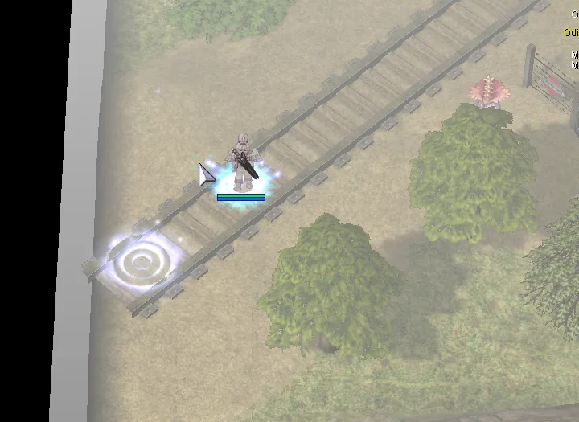

-
2
Find the sewer pipe in the Lighthalzen slums.
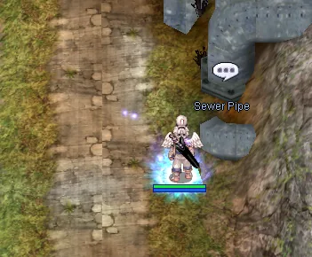
Amatsu field and dungeon Getting to Amatsu at all, then getting under it.
-
To reach the Amatsu field you have to enter a house and take the hidden corridor. It is the same route as the official Ninja job quest.
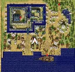
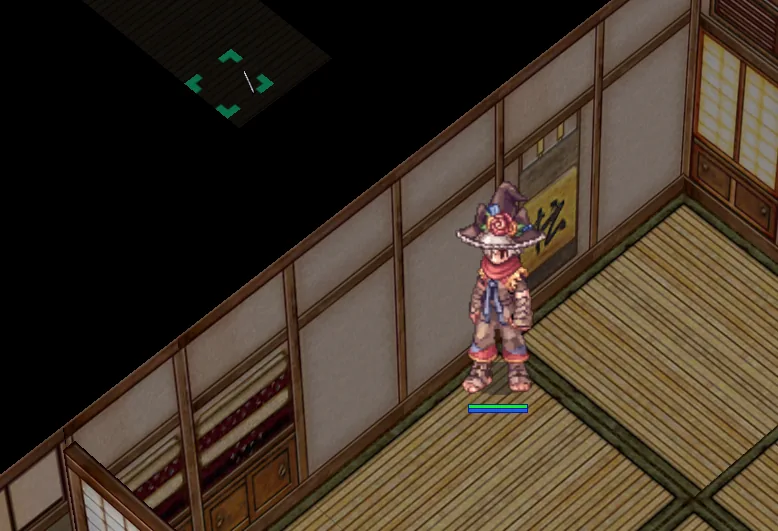
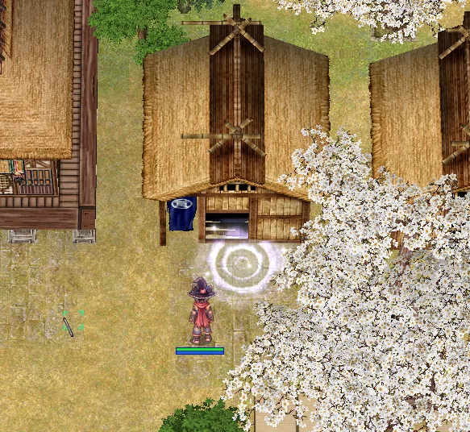
-
To open the dungeon, stand still in the middle of the Amatsu bridge for 30 seconds.
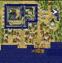

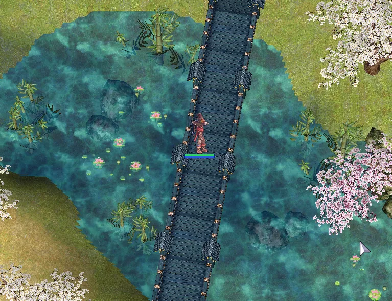

Relic gear options Where each of the three enchant slots is unlocked.
-
1
The first enchant option is unlocked in cmd_fild09.

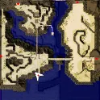
-
Options First line Second line Third line Weapon ATK / MATK Def and Mdef pierce Crit and fixed cast time Shield Def Mdef Damage reduction from all sizes -
2
The second enchant option is unlocked in hu_fild06.
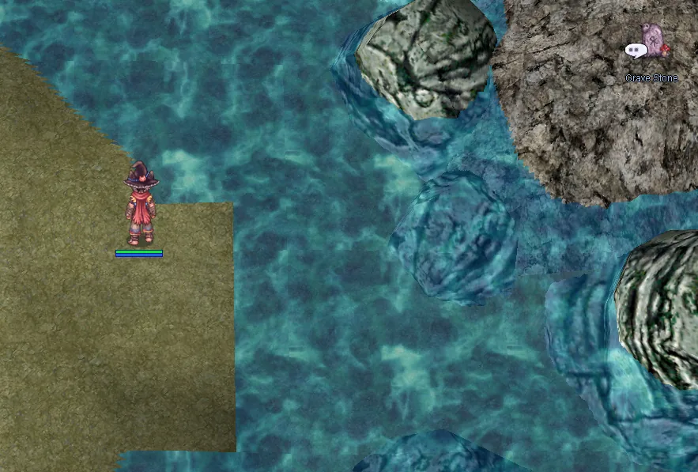

-
3
The third enchant option is unlocked in ra_fild10.

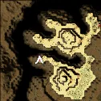
Fallen Hero The gate quest. Several other quests will not talk to you until this one is done.
-
You need three pieces of Lord of the Dead gear: the armour, the cloak and the spear.


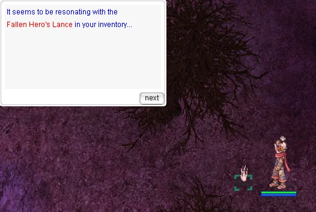
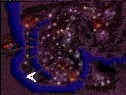
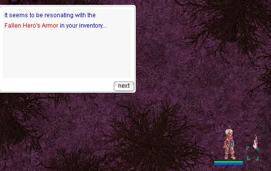
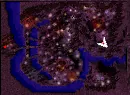

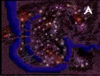
True Hero Shadow Gloves A long errand through Veins and Hugel for one piece of shadow gear.
-
1
Go into the orphanage in Veins.
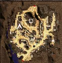
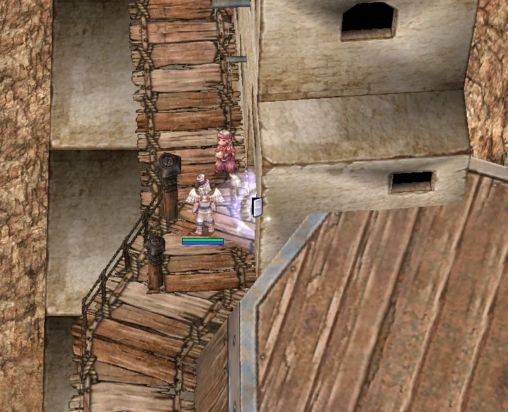
-
2
Talk to the child downstairs and go through every dialogue option she has.

-
3
Head outside, talk to the Old Lady and ask about Leela.
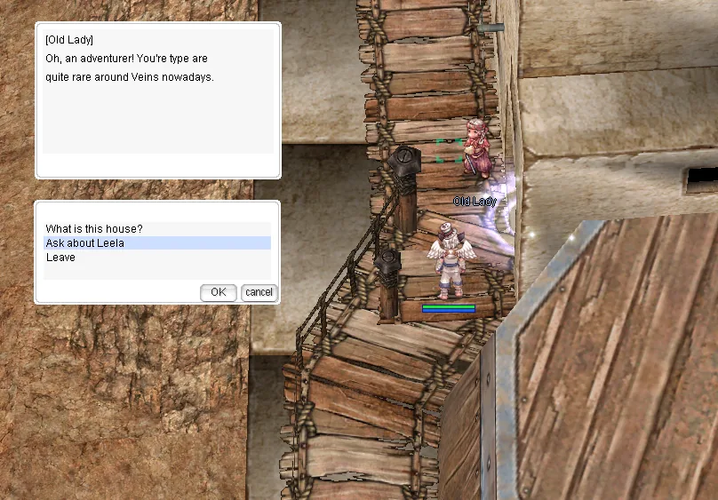
-
After that conversation, pick the second option.

-
4
Go back and talk to Leela again.
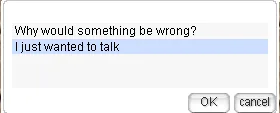

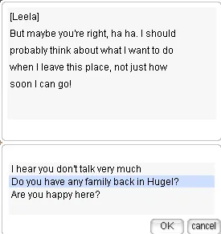
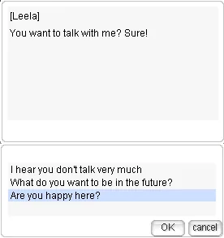
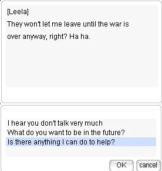
-
5
Once those conversations are done, travel to Hugel and find her grandfather.


-
6
Find Leela again and talk to her.

-
7
Look for Garlindolf.

-
8
Go to the Black Market, find the Smuggler at blk_mrkt 73,39 and choose "I need a person smuggled".

-
9
Talk to Garlindolf again.
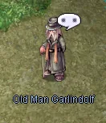
-
10
Talk to the Smuggler again and pay him 25 Mysterious Card.

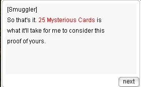
-
11
Go to Veins and find the Shady Individual.

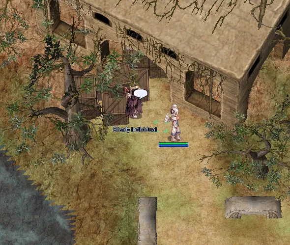
-
12
Talk to Leela again.
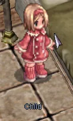
-
13
Talk to the Old Lady and distract her.
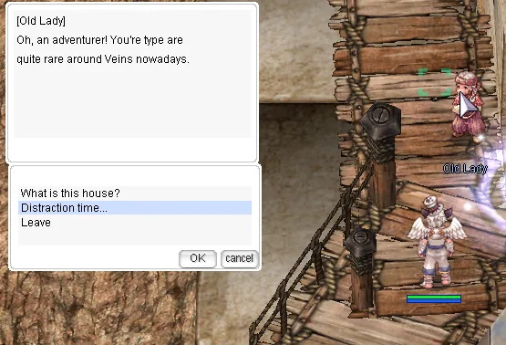
-
Go through all three dialogue options with the old lady.
-
14
Talk to the Shady Individual again.
-
15
Go to the Black Market and talk to the Smuggler.
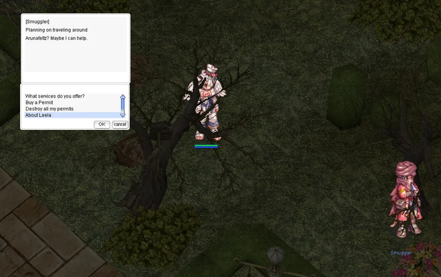
-
16
Finally, go to Hugel and talk to Garlindolf.

-
He hands over the True Hero Shadow Gloves.
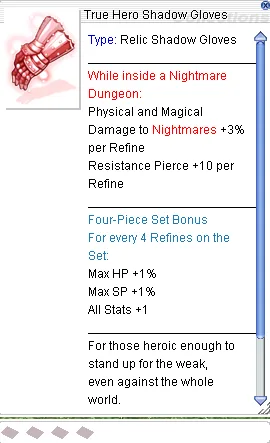
Niflheim challenge dungeon The witch, the piano and two endings you can both take.
-
Witch of Niflheim. You have to finish the Fallen Hero quest first.
-
You need an Eye of Dullahan to get into the witch's mansion. Any monster can drop it, and champions seem to drop it more often.
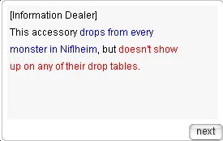
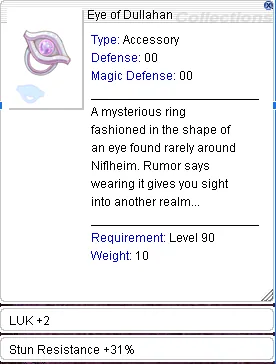
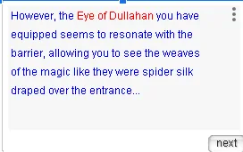
-
Once you have the accessory and are inside the mansion.
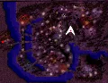
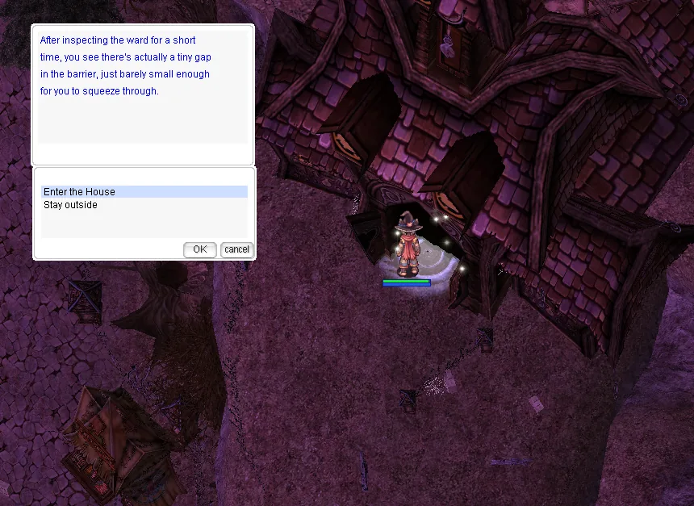
-
She will not open the quest dialogue until Fallen Hero is finished.
-
After that, talk to Kirkena. She asks for a book from the opera house and the remaining seven piano keys.
-
Talk to the piano on the second floor of the mansion.
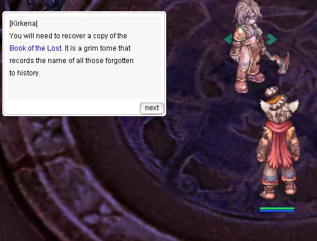


-
The piano keys only appear while the Eye of Dullahan is equipped.
-
Niflheim
-
The witch's mansion


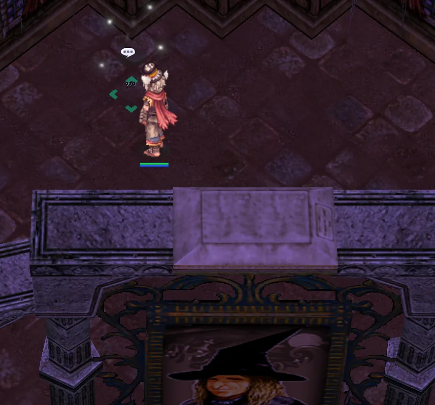
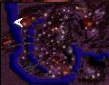
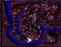
-
nif_fild02
-
nif_fild01
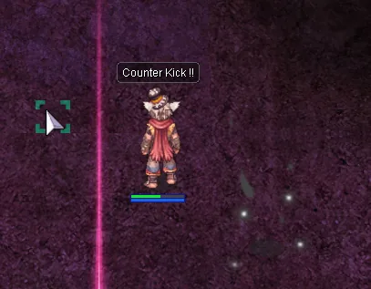
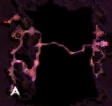
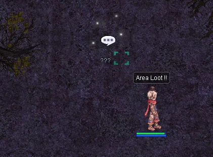
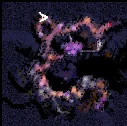
-
Opera house, first floor
-
Opera house, second floor

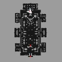


-
Kill the boss in the Niflheim challenge dungeon and Kirkena opens up again, asking you to go back to the Fallen Hero. That unlocks his instance.

-
Tell him he chose right and Eternal Regret is summoned.
-
Tell him he chose wrong and Avenger of Tartaros is summoned.
-
Bring ghost resistance.


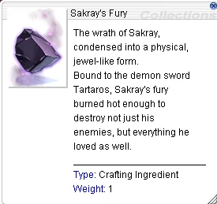
-
Once you have taken both choices, a third one appears: break the curse for good.
-
Pick that and both bosses are summoned at once.
Kiel challenge dungeon A door, a password, and a robot factory.
-
1
Click the second door from the left on the first floor of the Kiel Factory.

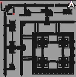
-
2
Enter the password ALLYSIA.
-
3
Enter the Secret Robot Factory, which is the Kiel challenge dungeon.

-
4
The challenge dungeon boss.

Thor challenge dungeon Buying your way past a metal gate.
-
1
Interact with the metal gate at spot 3 in thor_v03.
-
2
Talk to Rafeek in the Veins workshop.
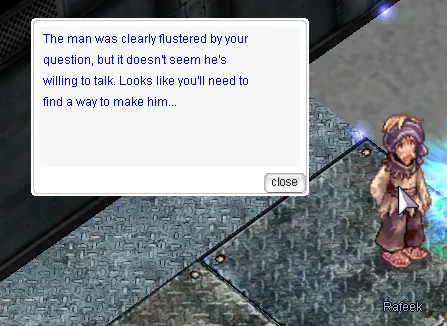
-
3
Go to the Black Market, ask the Information Dealer about the metal gate in Thor and pay 100 Mysterious Card.
-
4
Talk to Rafeek again.
-
5
Talk to the Smuggler in the Black Market. He asks for a few items.

-
6
Talk to Rafeek once more and he hands over the key to the gate in thor_v03, which opens the Thor challenge dungeon.
Black Ops Collect the relics, hand in the intel, follow it to Aldebaran.
-
Black Ops
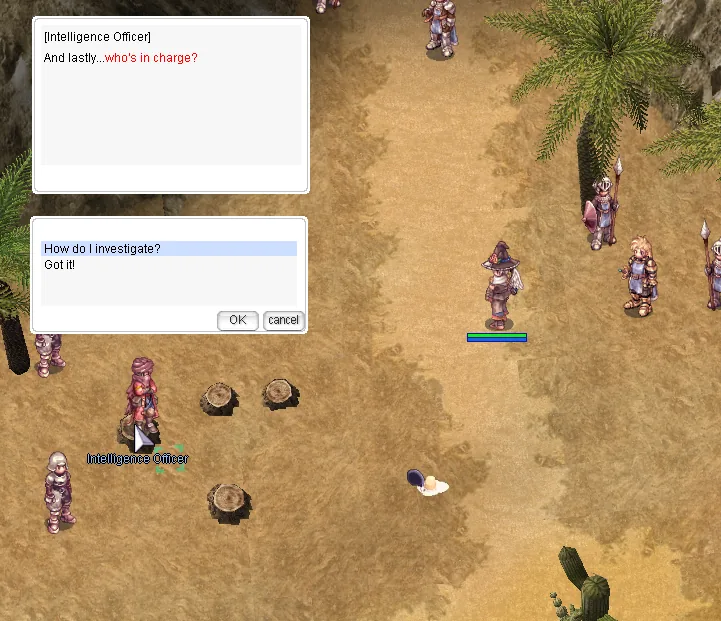
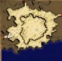
-
Farm the relics.

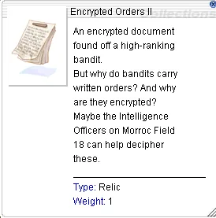
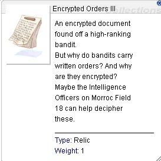


-
Hand the intel to the Intelligence Officer. Once it is all in, pick the option to go back over the clues and he sends you to investigate Aldebaran.


-
After the ship, talk to the Steel Wings Officer.
Celine Kimi The longest one here. Lutie, Juno, Prontera and back again.
-
Thanks to Habib for the help with this one.
-
Reward


-
1
Farm Innocence Reward Chests from the Lutie Nightmare boss until an Old Brooch drops.

-
2
With the Old Brooch in hand, start a fresh instance but do not talk to the Seal.
-
3
Head right and use High Jump at the spot in the picture.


-
4
Keep going right, then south, and turn left at the end of the map.
-
5
You will find a child next to a pile of presents. Talk to her.

-
6
Give her the Old Brooch and you get a Broken Heart.

-
7
Talk to the Artisan in Lutie.


-
8
Go to Juno and ask the Sages about the Broken Heart.


-
9
Talk to the sage right inside the entrance. He asks you to bring him some items.
-
Bring him
-
10x Convex Mirror (Consegue nas caixas de MvP das Nightmare Dungeon); 5x Crystallized Darkness (Dropa do Dark Illusion); 25x Blue Herbs; 25x White Herbs; 100x Bloody Coins (Dropa da Nightmare Horror Toy Factory).
-
10
Go to the Prontera church.

-
11
Talk to the High Priest next to the altar.

-
12
Go back to Lutie and talk to the Artisan again.
-
13
Talk to the Snowman.

-
14
Go to the second floor of the Toy Factory and talk to the duck.

-
15
Talk to the child who appears next to the duck.

-
16
Talk to the Snowman again.

-
17
Go to the Alchemist Guild in Aldebaran.
-
18
Talk to the Alchemist Guildsman.


-
19
Farm 25 Lost Letter, the champion relic in the Nightmare Horror Toy Factory.
-
20
Talk to the girl on the second floor of the Toy Factory again.
-
21
Talk to the Snowman again.
-
22
Talk to the Artisan.
-
23
Talk to the Robot on the first floor of the Toy Factory.

-
24
Talk to the Marionette.
-
25
The girl appears. Talk to her.
-
25.1

-
25.2

-
25.3

-
25.4
-
26
Talk to the Artisan.
-
He asks you to collect a last set of items.
-
5
Time Crystal, from Failed Foresight.
-
10
Elunium, from bosses.
-
10
Oridecon, from bosses.
-
20
Strong Runestone, from champion monsters at level 130 and up.
-
50
Mastela Fruit, from Succubus and Incubus.
-
You receive Perfect Love and access to the Kimi shop.
Endless Desert The map that loops. Here is the route table.
-
From 843, go west until you reach 544. Avatar of Agony moc_fild648 and 753 From 544, go east until you reach 198. Avatar of Sorrow moc_fild339 and 198 From 198, go north until you reach 696. Avatar of Hatred moc_fild454 and 912 From 696, go east to 999. Avatar of Despair moc_fild308 and 648 -
Endless Desert, the moc_fild maps
-
Every map is coloured by its layer, the way the sheet colours them. Deeper layers hit harder.
Layer 1Layer 2Layer 3Layer 4Layer 5From West East North South 544 201 198 339 114 198 582 843 114 201 582 544 114 201 843 114 201 843 178 582 201 843 312 582 114 312 843 648 582 339 843 201 582 114 18 178 843 582 198 753 753 · 454 696 · 696 · 999 648 198 18 648 114 198 582 648 843 582 201 114 339 · · 308 696 308 · · · 18 454 582 · · · 999 696 · · ·
Abbey sealed chambers Five things to click, and an altar that opens once you have.
-
1
Read the book lying open on the desk. It is a diary, or a logbook, kept by the bishop who was once in charge of the monastery.
-
2
Click the pulpit. “The beauty of the stars wanes in comparison...”
-
3
Click the statue. “...We lost our hearts to that golden hair...”
-
4
Find the bizarre and somewhat disturbing statue of a woman chained to the wall.
-
5
Now the ancient altar will talk to you. Check Requirements says what you are still missing, and Break the Seal opens the sealed chambers.
Potion crafting
Everything upgrades from the tier below
Your potion is a piece of equipment. It is never used up, and each upgrade eats the one under it, so the ladder starts at the Red Potion you were handed and works up. These are the materials each step asks for.
Health potions
| Potion | Needs | Effect |
|---|---|---|
| Red Potion | Handed to you in the tutorial | Heals 100 to 200 HP |
| Orange Potion | 10 Red Herb5 Yellow Herb15 Stem | Heals 400 to 600 HP |
| Yellow Potion | 25 Yellow Herb30 Mantis Scythe30 Moth Dust | Heals 1000 to 2000 HP |
| White Potion | 30 White Herb1 Burning Shard1 Enchanted Key1 Pyroxene | Heals 3000 to 6000 HP |
Where those come fromRed Herb: red plantsYellow Herb: yellow plantsStem: red, yellow and purple plantsMantis Scythe: MantisMoth Dust: Dustiness
Spirit potions
| Potion | Needs | Effect |
|---|---|---|
| Grape Juice | 25 Grape10 Ant Jaw10 Golden Hair | Recovers 50 to 100 SP |
| Blue Potion | 25 Blue Herb25 Grave Dust25 Blazing Stone25 Broken Urn | Recovers 400 to 600 SP |
Where those come fromGrape: purple plantsAnt Jaw: Soldier Deniro, Soldier Andre, Soldier PierreBlue Herb: the plants a boss leaves when it is summoned at an altar
Attack speed potions
| Potion | Needs | Effect |
|---|---|---|
| Concentration Potion | 25 Mushroom Spore1 Gnome's Moustache1 Memento | ASPD +2 |
| Awakening Potion | 25 Mushroom Spore25 Poison Spore1 Detrimindexta1 Ancient Tooth1 Cultish Mask | ASPD +4 |
| Berserk Potion | 25 Mushroom Spore25 Poison Spore1 Detrimindexta1 Karvodailnirol | ASPD +6 |
Where those come fromMushroom Spore: red mushroomsGnome's Moustache: KnockerMemento: Zombie Master
Status cure
| Potion | Needs | Effect |
|---|---|---|
| Green Potion | 30 Green Herb30 Stem25 Scell25 Nine Tail | Cures Bleeding, Poison and Burning on the spot |
Where those come fromGreen Herb: green plantsStem: red, yellow and purple plants
- Cooldowns
- Health potions sit on ten seconds. Spirit potions and the Green Potion sit on thirty. Vitality shortens all of them, half a second for every twenty five points.
- Not tradable
- No potion can be traded, and neither can blue herbs. Blue herbs can at least go into storage.
- Where to craft
- The Alchemist Guild in Aldebaran, at 68 56, does the whole ladder. The Orange Potion and the Grape Juice are the exception: any major city tool dealer has a guild representative who can make those two, so you do not have to make the trip for them.
- Once per character
- The ladder is not shared. Every character climbs it again from the Red Potion, which is the main reason a second character feels slower than the first. Herbs are much easier to come by at high level, so the second run is shorter than it looks.
- Where herbs come from
- Herbs drop from plants, which sit on ordinary maps and can be found with the map search box. Blue herbs are the exception: they only come from the plants a boss leaves behind when it is summoned at an altar. Plants belong to whoever hits them first, so leave one alone if it is not yours.
Source Player wiki
Taekwon mission
Five rounds of boss hunting
The quest starts in the Archer Village outside Payon. The skill raises your job level cap and the damage of everything you do, and it costs you the ability to change jobs ever again. These are the five rounds it asks for.
- 1
Kill Moonlight Flower & Dracula
- 2
Kill Goblin King & Osiris
- 3
Kill Pharaoh & Kraken
- 4
Kill Captain Sweety & Pyuriel
- 5
Kill Rogue Prototype, Faceworm Queen & RSX-0806
What each level pays
| Level | Kick Damage Bonus | Job Level Cap (Max 100) | Mastery Damage Bonus |
|---|---|---|---|
| 1 | 2% | +10 | 10 |
| 2 | 8% | +20 | 20 |
| 3 | 18% | +30 | 30 |
| 4 | 32% | +40 | 40 |
| 5 | 50% | +50 | 50 |
| 6 | 72% | +50 | 60 |
| 7 | 98% | +50 | 70 |
| 8 | 128% | +50 | 80 |
| 9 | 162% | +50 | 90 |
| 10 | 200% | +50 | 100 |
Learning it is permanent. A Taekwon who takes this can never become a Star Gladiator or a Soul Linker, and neither of their third jobs is reachable afterwards either.
Come find out what changed
Make an account, grab the client, and come and see what changed.